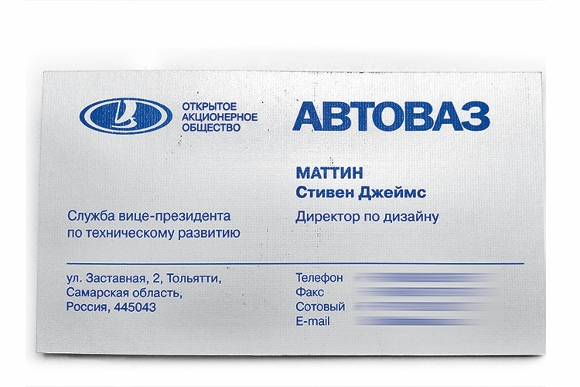
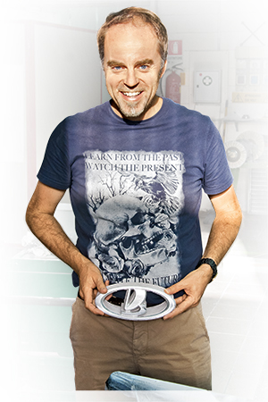

XRAY —Рентгеновский луч надежды
Директор по всему
— Скажи мне, что они тут написали? — Стив протягивает мне свою собственную визитную карточку той стороной, что отпечатана на кириллице. «Маттин Стивен Джеймс. Служба вице-президента по техническому развитию. Директор по дизайну».
По-русски Стив пока не говорит, не читает, почти не понимает, и вряд ли в ближайшее время что-то изменится: времени на уроки нет и не предвидится. А мы как раз рассуждаем на тему русских синонимов к слову «дизайнер» — мол, у нас, журналистов, ради спасения от повторов, позволяется прибегать к словечкам типа «стилист», «шеф-стилист», «дизайн-директор»
— Стилист — неправильное слово, — моментально реагирует Стив. — Рисовать и чувствовать стиль могут многие, а на дизайнере лежит общая ответственность за автомобиль и марку. Сам о себе он с улыбкой говорит, что он не шеф-дизайнер, а «cheif-of-everything» — «ответственный за все».

Рабочую неделю проводит в Тольятти, выходные в Москве и, конечно, по ходу работы над концепт-Ладой Стив часто «зависал» в Италии. По-моему, на теле этой Лады нет ни одного изгиба, который бы он не подправил. Как пройдет линия, по которой будет затемнена кромка лобового стекла, каким оттенком будут светиться задние фонари, как будет отполирована надпись на пластине номерного знака... С одной стороны, у ответственных за экстерьер и интерьер Жени Ткачева и Коли Суслова пока еще нет достаточного опыта, чтобы самим, быстро и точно принимать решения, а с другой, Стив и сам не хочет выпускать из рук ни одной ниточки процесса.
 — Я люблю решать проблемы.
Во время одной из наших встреч в Москве зазвонил айфон Маттина: оказывается, возникли сложности с таможенным оформлением зеркал заднего вида, которые летят в Москву в отдельной от машины упаковке.
Мне трудно представить себе какую-то другую компанию, где главный дизайнер занимался бы такими нюансами. Но Стив, похоже, затем в Россию и приехал. Вызов, драйв и, конечно, свобода творчества.
Портфолио Стивена Джеймса Маттина — летопись новейшей мерседесовской истории: самый первый хэтчбек А-класса, S-класс серии W220, лимузины Maybach, родстер SL образца 2001 года, трехдверный хэтчбек C-класса, кроссовер ML второго поколения, первый внедорожник GL и однообъемник R-класса. Но в Зиндельфингене, где Стив провел 18 лет и в свои сорок считался уже ветераном, он дошел только до должности старшего дизайн-менеджера. В 2005 его позвали в Volvo — уже шеф-дизайнером, чтобы преобразить лицо компании. В итоге созданный под началом Стива кроссовер XC60 стал самым продаваемым автомобилем Volvo за последние десять лет, да и новый седан S60 уступает ему совсем немного. Еще больше потенциал у гольф-хэтчбека V40 и кроссовера XC40 (его скоро покажут на автосалоне в Париже), которые на 90% разработаны под руководством Стива...
Но на гребне успеха Маттин из Швеции уезжает.
Сам Стив от расспросов уклоняется: «Слишком долгая и сложная история о взаимоотношениях с компанией Ford, с новыми владельцами из Китая...»
Шведы из Volvo как-то рассказывали мне, что маттиновский седан S60 в Китае встретили без энтузиазма — мол, слишком обтекаем, слишком похож на купе, тогда как местная публика предпочитает седаны с «классическим» профилем. А на местный рынок у компании Geely ставка особая — в Китае для производства автомобилей Volvo строятся три завода, уже открыт научно-технический центр в Шанхае... Немудрено, что вернувшийся на Volvo Питер Хорбери, которым заменили Маттина, на прошлогоднем автосалоне в Шанхае представил концепт-кар Volvo Universe с подчеркнуто трехобъемным кузовом.
Леонид Голованов рассказывал, что Ли Шу-Фу, владелец компании Geely, свои пожелания по облику новых моделей присылает Питеру Хорбери в стихотворной форме. И попробуй-ка не угоди хозяину!
Честно говоря, не представляю себе Стива Маттина в подобной ситуации.
И понимаю, почему он согласился на предложение Игоря Комарова.
Деньги? Да. Понятно, что прямого вопроса я не задавал и вряд ли бы получил прямой ответ, но смею предположить, что сегодня Стив Маттин — самый высокооплачиваемый автомобильный дизайнер в мире. Помимо жалования, АвтоВАЗ оплачивает аренду роскошной квартиры в двух шагах от Кремля, в Тольятти у Стива вилла с видом на Волгу... И пусть говорят, что деньги — это отчеканенная свобода, но чем больше я общался со Стивом, тем сильнее убеждался в том, что Стива подкупила свобода другого рода. Формально главный дизайнер в Тольятти подчиняется вице-президенту по техническому развитию, то есть Евгению Шмелеву. Но, во-первых, как утверждает сам Стив, у него есть прямой выход и на Комарова. А во-вторых...
Концепт-кар, который призван определить новое лицо компании, руководство до последнего момента не видело! Президент АвтоВАЗа и совет директоров одобрили эскизы, оглядели макет, утвердили имя, выделили бюджет — и... Приехали на Московский автосалон.
По ходу общения с вазовскими менеджерами мне показалось, что Маттина вообще побаиваются: мол, он у нас звезда, как скажет, так и будет. Карт-бланш. Абсолютный простор для деятельности. А ведь на ВАЗе, в отличие от Volvo, нужно преобразить не только лицо марки.
Вазовские специалисты по маркетингу рассказывали мне, что с подачи Маттина сейчас меняют цветовое оформление в наборах комплектаций. Для выставочного стенда на автосалоне Стив Маттин сам определял дизайн декораций и утверждал образы девушек-стендисток. Даже текст пресс-релиза написан им собственноручно!
А что до космической зарплаты и прочего «шоколада»... Во-первых, АвтоВАЗу не привыкать: здесь еще не забыли о многомиллионных «золотых парашютах», которыми одаривали нагрянувших сюда московских варягов, вскоре покинувших Тольятти в силу профнепригодности. А во-вторых, не исключено, что именно от этой сделки АвтоВАЗ выиграет больше, чем его новый главный дизайнер. Но это станет ясно после 2015 года, когда с конвейера начнут сходить новые Лады с новым лицом.